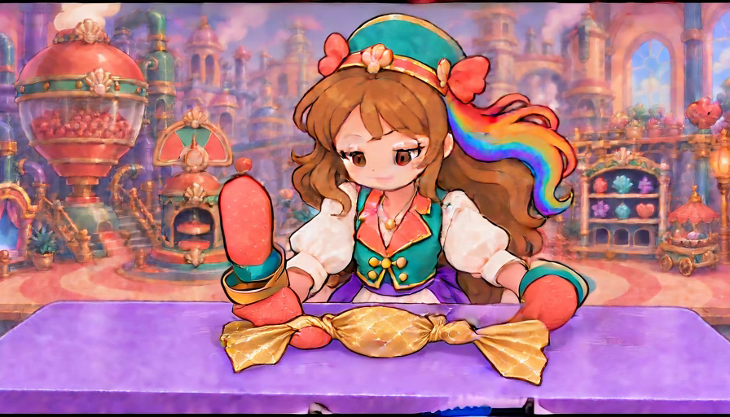
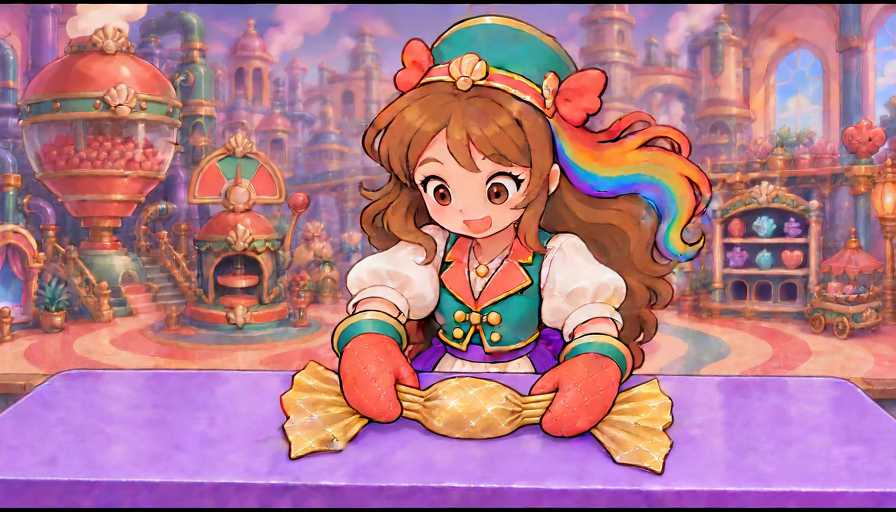

Do the hands support this gold wrapper in motion?
Both new motion components fail the 4.5/5 drafting floor. Supported release 1.7/5; opposite wrist twist 2.2/5. All 82 complete native frames and 24 named component opinions are individually preserved. Static endpoint sources remain 4.5 provisional and actual game WRAP remains 2.8/5.
The twist reference keeps its hands and paper fans together, but the wrists do not make the opposed turns and the gold neck folds never wind closed. The release keeps the covered sweet supported, but leaves extra coral thumb material at the neck and breaks the glove/cuff shapes as the palms lift. Neither component demonstrates the required physical wrapping workflow.
Relationship to the actual game
The current live Candy widget is a turquoise decorative wrapper with a magic spiral. These gold-paper paintings are unbound replacement studies. The current story job and Opera training do not yet use these hands or this wrapper family. Source beauty and local motion cannot pass actual-game matching. All 783 recorded production literals remain unchanged.
Still required: partial fold → opaque cover → gather → opposite wrist twists → supported release with the same sweet and sheet, two coherent sleeve-owned hands, conserved fans and stable table support. Then test the authored family in the actual job and training with matching identity, sockets and action timing. Device, child, owner and comprehensive all-job approval remain open.
Release component — 1.7/5, rejected
Every native frame, its own score and evaluation · Literal manifest saved before dispatch · Actual terminal render receipt
Final native canvas

| Individual relationship | Score/5 | Evaluation |
|---|---|---|
| two coherent owned mittens | 1.3 | Two main palms rise, but additional coral shapes remain below the left cuff and at the left neck. Principal hand count alone conceals broken hand ownership. |
| left thumb conservation | 0.8 | From frame14 onward a coral thumb-like lobe stays at the left neck while the main mitten departs. It does not remain attached to the withdrawing hand. |
| right neck material conservation | 2.5 | The right neck develops a bulb as the mitten lifts. Its former hand-contact region is not conserved as the same short flexible paper winding. |
| sleeve cuff mitten topology | 1.6 | Withdrawal smears and separates the left glove/cuff contour. Late left hand becomes a long oval with a lower coral wedge; right cuff also deforms. |
| clean disengagement before withdrawal | 1.8 | Both palms eventually move away, but the movement leaves coral material at the wrapper and lacks a coherent whole-hand separation seam. |
| quiet two hand rest | 1.4 | Hands rise into an unrequested display pose, then settle asymmetrically. Tall upright left glove does not match the quiet relaxed endpoint. |
| single wrapper and broad fans | 4.1 | Both broad gold fans remain attached to the central wrapper throughout. Local neck bulbs and changing contours prevent a stronger material-conservation opinion. |
| covered oval identity | 4.3 | A single opaque gold central oval remains covered with no visible red candy reveal or extra central sweet. Modest silhouette/texture variation remains. |
| table support | 4.2 | The central sweet remains low on the purple work surface during withdrawal. Local hand remnants and small footprint changes undermine the complete supported release. |
| character scene registration | 3.5 | Unrequested head/expression change and late cuff/silhouette/working-footprint drift weaken continuity against the fixed room. |
| painted style and readability | 4.0 | Entry retains broad painted colour and contours; blurred withdrawal and malformed late mittens reduce clarity. The inherited busy room remains a separate 4.4 source priority. |
| whole supported release component | 1.7 | Rejected: preserved table support and fans do not compensate for detached thumb material, broken cuffs, elongated palms and absent quiet coherent two-hand rest. |
Twist component — 2.2/5, rejected
Every native frame, its own score and evaluation · Literal manifest saved before dispatch · Actual terminal render receipt
Final native canvas

| Individual relationship | Score/5 | Evaluation |
|---|---|---|
| exactly two principal hand groups | 4.6 | Two principal mittens remain connected to their own sleeves; no extra operator or detached coral hand remnants appear in this bounded study. |
| sleeve cuff mitten topology | 4.4 | Both cuffs and rounded mittens remain broadly coherent. Small thumb/cuff contour changes still require owner and actual-game identity review. |
| left short neck grip | 4.4 | Left hand retains its own loose pleat group throughout. Stable holding does not demonstrate thumb-under wrist rotation or a finished twist. |
| right short neck grip | 4.4 | Right mitten stays with its own pleat group and outside fan. Its quilted back never makes the required across-neck roll. |
| opposed wrist rotation | 1.2 | Neither wrist visibly executes the instructed opposite roll. Minor contour variation and head acting cannot count as a contact-driven rotational action. |
| short opposite paper winding | 1.1 | Both gold neck groups remain long parallel open pleats. They do not become the short diagonal opposite windings seen in the source target endpoint. |
| single wrapper fan conservation | 4.3 | Both broad gold fans stay continuously attached outside the hands. Small silhouette/texture variation remains, but the earlier cuff-fan fusion is absent here. |
| covered oval identity | 4.4 | One central gold oval stays covered and opaque. No new sweet or exposed red centre appears, though slight size/paint variation remains. |
| table support | 4.4 | The central body stays low on the same purple worktable; there is no lift/drop. Full contact/body registration in actual gameplay remains unassigned. |
| character scene registration | 3.8 | Entry placement mostly holds, but late head/eyes/mouth acting and modest contour changes distract from the absent wrist action. |
| finished twist held endpoint | 1.2 | Final pose still holds loose parallel neck folds with near-entry hand orientations. The required finished short twists are absent. |
| whole opposed twist component | 2.2 | Rejected: coherent grips, fans and table support improve conservation, but the defining opposed wrist motion and paper winding never occur. |
Generation and review boundaries
Both jobs reused exact reviewed whole-scene source images through the unchanged developed local Comfy graph: 896×512, 41 frames at 24 fps,24 steps and the pinned GGUF models. Its single start image is conditioned; the target endpoint is a human QC reference only. Every native video, workflow, submitted manifest, receipt and decoded frame is preserved. QA boards use original-size frames without creative pixel changes.
Named corrections and full remaining objective · Task plan and rule coverage · Current-first library and preserved history evidence